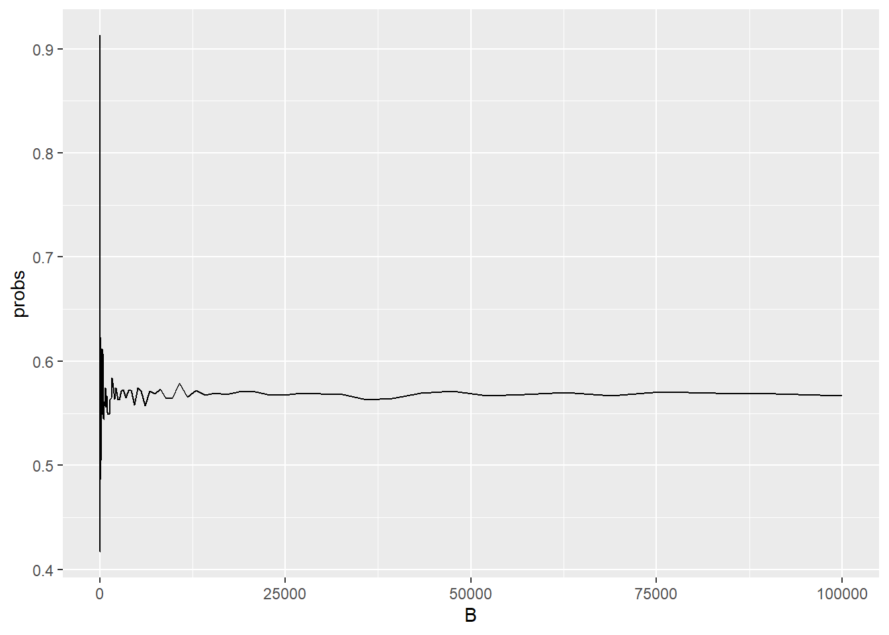

p_2x_rojo <- (18/37)*(18/37)
p_2x_rojo[1] 0.23666912. Variable Aleatoria, Probabilidad y teorema central del límite
Libro marea verde 2º Bachillerato. Páginas 257-267
La Probabilidad asociada a un suceso o evento aleatorio es un número entre 0 y 1 que mide el grado de certidumbre de que dicho suceso ocurra. Se expresa como \(P(Evento)={\frac{{ Eposibles }}{Etotales}}\)
Una operación que puede producir algunos resultados bien definidos, se llama un Experimento
Ejemplo: Lanzar una moneda \(P(cara)={\frac{{ favorables }}{posibles} = \frac{1}{2}}\)
Todos los resultados posibles de un experimento en su conjunto, forman el Espacio de la muestra O Espacio Muestral. En el ejemplo S = {Cara, Cruz}
Otro ejemplo: Lanzar un dado y obtener un tres. \(P(3)={\frac{{ 1 }}{6}}\) Lanzar un dado y obtener un uno o un tres. \(P(1,3)={\frac{{ 1 }}{6}+\frac{{ 1 }}{6} = \frac{{ 1 }}{3}}\) El espacio muestral es S = {1,2,3,4,5,6}
Cualquier resultado posible del Espacio Muestral S de un Experimento Aleatorio se llama Resultado
Cualquier subconjunto del Espacio Muestral S se llama Evento (denotado por E). Cuando se produce un resultado que pertenece al subconjunto E, se dice que ha ocurrido un suceso. Mientras que, cuando un resultado que no pertenece al subconjunto E tiene lugar, el Evento no ha ocurrido.
Por Ensayo, entendemos la realización de un experimento aleatorio.
La probabilidad de que un evento ocurra se denota con la letra p, mientras que la de que no ocurra con la letra q.
Se cumple que p = 1-q La probabilidad de un suceso imposible es 0. La probabilidad de un suceso seguro es 1.
La probabilidad de que ocurran dos sucesos A y B estadísticamente Independientes es la multiplicación de ambas probabilidades:
\(\displaystyle P(A \cap B) = P(A) \cdot P(B)\)
La probabilidad de que ocurran dos sucesos estadísticamente dependientes es la multiplicación de la probabilidad del primero por la probabilidad del segundo condicionado al primero:
\({\displaystyle P(A \cap B) = P(A) \cdot P(B|A)}\)
En el primer caso (sucesos independientes): Probabilidad de obtener dos veces rojo en la ruleta en un experimento:
p_2x_rojo <- (18/37)*(18/37)
p_2x_rojo[1] 0.2366691En el segundo caso (sucesos dependientes): Probabilidad de obtener dos ases en Texas Holdem
p_AA <- (4/52)*(3/51)
p_AA[1] 0.004524887# En promedio, ocurre una vez de cada:
1/p_AA[1] 221Dataset de ejemplo: lqsa
# leemos el fichero desde el repositorio de github:
lqsa <- read.csv("https://raw.githubusercontent.com/jesusturpin/curintel2324/main/data/lqsa.csv")
str(lqsa)'data.frame': 30 obs. of 9 variables:
$ Nombre : chr "Ongombo" "Violeta" "Javi" "Estela Reynolds" ...
$ Motes : chr "Mondongo" "La cuchillos" "El pelocho" "La paca " ...
$ Poder : int 9 3 15 2 3 2 17 3 5 15 ...
$ Convivencia: int 17 2 4 3 5 24 8 5 11 9 ...
$ Liante : int 36 30 56 154 18 52 44 70 158 14 ...
$ Atractivo : int 23 12 16 28 16 11 5 20 2 16 ...
$ Locura : int 35 100 95 100 99 18 5 90 88 15 ...
$ Grupo_edad : chr "Adulto" "Adulto" "Adulto" "Adulto" ...
$ Sexo : chr "Hombre" "Mujer" "Hombre" "Mujer" ...# Convertimos en factor las últimas dos columnas:
categ <- c("Grupo_edad", "Sexo")
# Si queremos convertir todas las columnas chr: categ <- sapply(lqsa, is.character)
lqsa[categ] <- lapply(lqsa[categ], as.factor)
summary(lqsa) Nombre Motes Poder Convivencia
Length:30 Length:30 Min. : 1.000 Min. : 2.000
Class :character Class :character 1st Qu.: 2.000 1st Qu.: 4.250
Mode :character Mode :character Median : 2.500 Median : 8.000
Mean : 4.533 Mean : 9.267
3rd Qu.: 4.750 3rd Qu.:12.000
Max. :17.000 Max. :25.000
Liante Atractivo Locura Grupo_edad Sexo
Min. : 10 Min. : 1.00 Min. : 5.0 Adulto :24 Hombre:14
1st Qu.: 38 1st Qu.: 5.00 1st Qu.: 54.0 Anciano: 5 Mujer :14
Median : 67 Median :11.50 Median : 84.0 Niño : 1 Otro : 2
Mean : 73 Mean :13.07 Mean : 70.1
3rd Qu.: 98 3rd Qu.:19.00 3rd Qu.: 90.0
Max. :158 Max. :30.00 Max. :100.0 En la estadística, se conoce como Muestreo a la técnica para la selección de una muestra a partir de una población estadística. Al elegir una muestra aleatoria se espera conseguir que sus propiedades sean extrapolables a la población.
Utilizando sample(), extraemos la mitad de la baraja:
n = round(nrow(lqsa)/2)
s <- sample(1:nrow(lqsa), n, replace=FALSE)
lqsa[s,] Nombre Motes Poder Convivencia Liante Atractivo
12 Lola La Chihuahua 2 4 70 25
21 Menchu La Tanqueta 4 6 92 3
16 Maxi Mente Fría 3 12 158 2
4 Estela Reynolds La paca 2 3 154 28
15 Leo Friki 1 5 86 4
20 Coque El modesto 1 4 50 15
30 Teodoro Dj theo 1 4 56 6
2 Violeta La cuchillos 3 2 30 12
23 Raquel La Barbie 1 11 22 30
6 Vicente El hombre cojín 2 24 52 11
17 Los Cuquitos Los hijos de los Cuquis 3 18 90 8
28 Araceli La Bollera Mística 2 8 36 15
10 Berta La beata 15 9 14 16
8 Amador Capitan Salami 3 5 70 20
26 Maite Maytechu 1 3 58 15
Locura Grupo_edad Sexo
12 90 Adulto Mujer
21 89 Anciano Mujer
16 36 Anciano Hombre
4 100 Adulto Mujer
15 66 Adulto Hombre
20 88 Adulto Hombre
30 74 Adulto Hombre
2 100 Adulto Mujer
23 20 Anciano Mujer
6 18 Anciano Hombre
17 50 Niño Otro
28 76 Adulto Mujer
10 15 Adulto Mujer
8 90 Adulto Hombre
26 70 Adulto MujerEl código anterior, realiza un sorteo distinto en cada ejecución del código. Si queremos que nuestro experimento sea reproducible, debemos utilizar una misma semilla para generar una secuencia de números aleatorios:
set.seed(4444)
s <- sample(1:nrow(lqsa), n, replace=FALSE)
s [1] 8 12 6 18 25 28 14 24 17 5 3 15 22 2 29lqsa[s,] Nombre Motes Poder Convivencia Liante Atractivo
8 Amador Capitan Salami 3 5 70 20
12 Lola La Chihuahua 2 4 70 25
6 Vicente El hombre cojín 2 24 52 11
18 Padre Alejandro El sacerdote 5 25 10 25
25 Bruno El pianista loco 2 6 24 11
28 Araceli La Bollera Mística 2 8 36 15
14 Clara Sobrina Menchu 2 14 156 2
24 Antonio Recio El Rancio 17 4 100 7
17 Los Cuquitos Los hijos de los Cuquis 3 18 90 8
5 La chusa La chusa 3 5 18 16
3 Javi El pelocho 15 4 56 16
15 Leo Friki 1 5 86 4
22 Alba La trans 2 12 64 5
2 Violeta La cuchillos 3 2 30 12
29 Patricio El homicida 7 12 110 1
Locura Grupo_edad Sexo
8 90 Adulto Hombre
12 90 Adulto Mujer
6 18 Anciano Hombre
18 15 Adulto Hombre
25 88 Adulto Hombre
28 76 Adulto Mujer
14 80 Adulto Mujer
24 77 Adulto Hombre
17 50 Niño Otro
5 99 Adulto Mujer
3 95 Adulto Hombre
15 66 Adulto Hombre
22 90 Adulto Otro
2 100 Adulto Mujer
29 100 Adulto HombrePodemos realizar la misma operación, utilizando el operador %>% pipe y la función sample_n(), ambas en la libreria dplyr
library(dplyr)
set.seed(4444)
n = round(nrow(lqsa)/2) # 15
lqsa %>%
sample_n(size=n, replace=FALSE) Nombre Motes Poder Convivencia Liante Atractivo
1 Amador Capitan Salami 3 5 70 20
2 Lola La Chihuahua 2 4 70 25
3 Vicente El hombre cojín 2 24 52 11
4 Padre Alejandro El sacerdote 5 25 10 25
5 Bruno El pianista loco 2 6 24 11
6 Araceli La Bollera Mística 2 8 36 15
7 Clara Sobrina Menchu 2 14 156 2
8 Antonio Recio El Rancio 17 4 100 7
9 Los Cuquitos Los hijos de los Cuquis 3 18 90 8
10 La chusa La chusa 3 5 18 16
11 Javi El pelocho 15 4 56 16
12 Leo Friki 1 5 86 4
13 Alba La trans 2 12 64 5
14 Violeta La cuchillos 3 2 30 12
15 Patricio El homicida 7 12 110 1
Locura Grupo_edad Sexo
1 90 Adulto Hombre
2 90 Adulto Mujer
3 18 Anciano Hombre
4 15 Adulto Hombre
5 88 Adulto Hombre
6 76 Adulto Mujer
7 80 Adulto Mujer
8 77 Adulto Hombre
9 50 Niño Otro
10 99 Adulto Mujer
11 95 Adulto Hombre
12 66 Adulto Hombre
13 90 Adulto Otro
14 100 Adulto Mujer
15 100 Adulto Hombre¿Qué es el atributo replace (sustitución o reemplazo)? Cuando hacemos un muestreo sin sustitución (replace = FALSE), el elemento tomado de los datos, no puede volver a salir, por ejemplo si nos reparten 2 cartas, partiendo de una baraja de 52 cartas, no nos pueden dar dos cartas iguales. Los sucesos son dependientes.
Si el muestreo es con reemplazo, como tirar un dado o una moneda, en cada extracción individual, todas las opciones están disponibles. Se dice que todos los sucesos son independientes.
Tirar un dado n veces:
sample(1:6,n, replace=TRUE) [1] 4 2 6 6 3 1 4 2 1 6 3 1 4 2 1Ruleta rusa: ¿Cón o sin reemplazo?
sample(1:6,1, replace=?)¿Tiene sentido ejecutar este código? ¿Qué ocurriría?
sample(1:6,7, replace=FALSE)Aleatoriedad: Los elementos de la muestra deben ser seleccionados al azar, garantizando que cada elemento en la población tenga una oportunidad conocida y no nula de ser seleccionado.
Independencia: Las observaciones en la muestra deben ser independientes entre sí, lo que significa que la selección de un individuo no afecta la selección de otro.
Tamaño de la muestra: El tamaño de la muestra (n) debe ser adecuado para el estudio. Muestras más grandes tienden a producir estimaciones más precisas.
Variabilidad: Las muestras diferentes sacadas de la misma población pueden producir diferentes estadísticas. Esta variabilidad se refleja en el error estándar de la estadística.
Sesgo o Bias: Si el método de muestreo es sesgado, entonces las inferencias hechas a partir de la muestra pueden no ser representativas de la población.
Eficiencia: Se refiere a la capacidad del método de muestreo para obtener estimaciones precisas usando el mínimo tamaño de muestra posible.
Muestreo Aleatorio Simple: Cada individuo de la población tiene la misma probabilidad de ser seleccionado. Es la técnica de muestreo más básica y se realiza sin reemplazo.
Muestreo Sistemático: Se elige un punto de inicio al azar y luego se seleccionan elementos en intervalos fijos. Por ejemplo, en una lista de 1000 individuos, podríamos elegir cada 10º individuo para una muestra de tamaño 100.
Muestreo Estratificado: La población se divide en subgrupos homogéneos llamados estratos. Se toma una muestra aleatoria simple de cada estrato. Es útil cuando se sabe que diferentes subgrupos de una población pueden variar en relación a la característica de interés.
Muestreo Intencional o de Juicio: Se seleccionan específicamente ciertos individuos que cumplen con características deseadas o porque el investigador cree que son representativos. No es aleatorio y puede estar sujeto a sesgos.
Muestreo por Etapas Múltiples: Es una combinación de dos o más técnicas de muestreo. Por ejemplo, primero se podría hacer un muestreo por conglomerados (primera etapa) y luego dentro de cada conglomerado seleccionado, hacer un muestreo aleatorio simple (segunda etapa).
La elección del método de muestreo depende de la naturaleza de la población, los objetivos del estudio y los recursos disponibles. Es crucial elegir el método adecuado para garantizar que los resultados del estudio sean válidos y representativos de la población de interés.
Para una población con cualquier forma de distribución (aunque no sea normal) con una media \(\mu\) y una varianza \(\sigma^2\) finitas, la distribución de la media de la muestra se aproximará a una distribución normal o gaussiana a medida que el tamaño de la muestra (n) aumente.

También llamada esperanza matemática Se define como la media de la distribución de probabilidad \(E[X] = \sum_{i=1}^nxi*pi\)
\({\displaystyle\begin{aligned}\operatorname{E}(X) &= 1 \cdot \frac{1}{6} + 2 \cdot \frac{1}{6} + 3 \cdot \frac{1}{6} + 4 \cdot \frac{1}{6} + 5 \cdot \frac{1}{6} + 6 \cdot \frac{1}{6}\\&= \frac{1 + 2 + 3 + 4 + 5 + 6}{6} = \frac{21}{6} = 3.5\end{aligned}}\)
Vemos como calcularlo en R:
dado <- data.frame(n=1:6)
dado n
1 1
2 2
3 3
4 4
5 5
6 6mean(dado$n)[1] 3.5Si lanzamos el dado 50 veces:
dado_x50 <- dado %>%
sample_n(50, replace=TRUE)
mean(dado_x50$n)[1] 3.64Si dibujamos el histograma:
ggplot(dado_x50, aes(n)) +
geom_histogram(bins=6, fill = "blue", color = "black")+
labs(title = "Experimento: 50 tiradas de un dado", x = "Número", y = "Frecuencia")+
theme(plot.title = element_text(hjust = 0.5))+
geom_hline(yintercept = 50/6, color = "red", linetype = "dashed", linewidth = 1)Mientras que la distribución teórica es:
pdado <- data.frame(numero = 1:6, prob = rep(1/6,6))
ggplot(pdado, aes(x=numero,y=prob)) +
geom_col(fill = "blue", color = "black")+
geom_hline(yintercept = 1/6, color = "red", linetype = "dashed", size = 1)Warning: Using `size` aesthetic for lines was deprecated in ggplot2 3.4.0.
ℹ Please use `linewidth` instead.
A medida que la muestra sea mayor, el valor del muestreo se aproxima al valor teórico:
dado %>%
sample_n(3000, replace=TRUE) %>%
ggplot(aes(n))+
geom_histogram(bins=6, fill = "blue", color = "black")+
labs(title = "Experimento: 3000 tiradas de un dado", x = "Número", y = "Frecuencia")+
theme(plot.title = element_text(hjust = 0.5))+
geom_hline(yintercept = 3000/6, color = "red", linetype = "dashed", size = 1) dado %>%
sample_n(6000, replace=TRUE) %>%
summarize(media = mean(n)) media
1 3.478833El juego de la ruleta. Acertar a un número de la ruleta del 0 al 36, tiene como precio una recompensa de 36x lo apostado, es decir, un beneficio neto de 35 veces la cantidad apostada mas el reintegro.
Suponiendo que se apueste 1 € en cada tirada. Supongamos que nuestro número es el 7, ganaríamos 35 € cada vez que salga, y perderíamos 1 € si no sale: \(E[X] = \sum_{i=1}^nxi*pi = (-1)*(1/37) + (-1)*(1/37) + ... + 35*(1/37) = -36/37 + 35/37 = -1/37\)
Si nos ponemos del lado del casino, ganamos 1 € cada vez que no sale el 7 y perdemos 35, cada vez que salga:
\(E[X] = \sum_{i=1}^nxi*pi = (1)*(1/37) + (1)*(1/37) + ... + (-35)*(1/37) = 36/37 - 35/37 = 1/37\)
Como vemos, las matemáticas están de su parte, por lo que en teoría, el casino no necesita hacer trampas.
Veamos el resultado, simulando varias tiradas: Cuando la muestra es pequeña:
ruleta <- data.frame(n=0:36)
ruleta %>%
sample_n(100, replace=TRUE) %>%
mutate(jugador = case_when(n == 7 ~ 35, TRUE ~ -1)) %>%
mutate(casino = case_when(n == 7 ~ -35, TRUE ~ 1)) %>%
summarize(gan_jug = sum(jugador), gan_casino = sum(casino), ev_jug = mean(jugador), ev_cas = mean(casino)) gan_jug gan_casino ev_jug ev_cas
1 -64 64 -0.64 0.64Si la muestra es muy grande (5M), la media tiende a ese -1/37 para el jugador y 1/37 para el casino:
ruleta <- data.frame(n=0:36)
ruleta %>%
sample_n(5000000, replace=TRUE) %>%
mutate(jugador = case_when(n == 7 ~ 35, TRUE ~ -1)) %>%
mutate(casino = case_when(n == 7 ~ -35, TRUE ~ 1)) %>%
summarize(gan_jug = sum(jugador), gan_casino = sum(casino), ev_jug = mean(jugador), ev_cas = mean(casino), varianza = var(jugador)) gan_jug gan_casino ev_jug ev_cas varianza
1 -156092 156092 -0.0312184 0.0312184 33.93761Para reducir la varianza, vamos a repetir el experimento apostando a impar:
ruleta <- data.frame(n=0:36)
ruleta %>%
sample_n(5000000, replace=TRUE) %>%
mutate(jugador = case_when((n %% 2) == 1 ~ 1, TRUE ~ -1)) %>%
mutate(casino = -jugador) %>%
summarize(gan_jug = sum(jugador), gan_casino = sum(casino), ev_jug = mean(jugador), ev_cas = mean(casino), varianza = var(jugador)) gan_jug gan_casino ev_jug ev_cas varianza
1 -132634 132634 -0.0265268 0.0265268 0.9992965La falacia del jugador: Si aparecen 50 rojos consecutivos en la ruleta, ¿Qué probabilidad hay de que el siguiente número sea otra vez rojo?
Cuando resolvler un problema matemático se hace muy complejo computacionalmente, una forma de hacerlo es mediante simulación. Veamos un ejemplo clásico:
Supongamos que en una clase hay 50 personas. Asumimos que han sido aleatoriamente seleccionadas. ¿Cuál es la probabilidad de que al menos dos personas cumplan años el mismo día?
n <- 50
dias <- sample(1:365, n, replace = TRUE)La función duplicated(), nos permite averiguar si en un vector hay elementos duplicados
duplicated(c(1,2,3,1,4,3,5))[1] FALSE FALSE FALSE TRUE FALSE TRUE FALSEduplicated(dias) [1] FALSE FALSE FALSE FALSE FALSE TRUE FALSE FALSE FALSE FALSE FALSE FALSE
[13] FALSE FALSE FALSE FALSE FALSE FALSE TRUE FALSE FALSE FALSE FALSE TRUE
[25] FALSE FALSE FALSE FALSE FALSE FALSE TRUE FALSE FALSE FALSE FALSE FALSE
[37] FALSE FALSE FALSE FALSE FALSE FALSE FALSE FALSE FALSE FALSE FALSE TRUE
[49] FALSE FALSENos interesa saber si al menos uno de ellos lo está, para ello, la función any() evalua si hay algún elemento a TRUE.
any(duplicated(c(1,2,3,1,4,3,5)))[1] TRUEany(duplicated(dias))[1] TRUELa función replicate(), nos permite repetir un experimiento B veces:
B <- 10000
mismo_dia_cumple <- function(n) {
dias <- sample(1:365, n, replace = TRUE)
any(duplicated(dias))
}
results <- replicate(B, mismo_dia_cumple(n))
mean(results)[1] 0.975Generalizamos la función:
calcular_prob_sim <- function(n, B=10000) {
resultados <- replicate(B, mismo_dia_cumple(n))
mean(resultados)
}Usamos sapply para calcular las probabilidades con distinto número de alumnos:
n <- seq(1,60)
prob_sim <- sapply(n, calcular_prob_sim)
ggplot(data.frame(n, prob_sim), aes(n, prob_sim))+
geom_point()Para calcular la probabilidad teórica:
\(p = \frac{365}{365} \cdot \frac{364}{365} \cdot \frac{363}{365} \cdot \ldots \cdot \frac{365 - n + 1}{365}\)
\(p = \begin{cases}\frac{365!}{365^n \cdot (365 - n)!} & \text{si } 1 \leq n \leq 365 \\0 & \text{si } n > 365\end{cases}\)
\(1 - p = \begin{cases} 1 - \frac{365!}{365^n \cdot (365 - n)!} & \text{si } 1 \leq n \leq 365 \\ 1 & \text{si } n > 365\end{cases}\)
calcular_prob_exac <- function(n){
prob_unique <- seq(365,365-n+1)/365
1 - prod(prob_unique)
}
prob_exac <- sapply(n, calcular_prob_exac)
ggplot(data.frame(n, prob_sim, prob_exac), aes(n, prob_sim))+
geom_point()+
geom_line(aes(n, prob_exac), color="red")Si repetimos el experimiento con 500 simulaciones:
Para averiguar la precisión del cálculo, podemos ver la estabilidad del cálculo según el número de simulaciones. Seleccionando diferentes valores de B de forma logarítmica, para el problema del cumpleaños en un grupo de 25 personas:
B <- 10^seq(1, 5, len = 100)
calcular_prob_sim <- function(B, n=25){
dias <- replicate(B, mismo_dia_cumple(n))
mean(dias)
}
probs <- sapply(B, calcular_prob_sim)
results <- data.frame(probs, B)
ggplot(results, aes(B, probs)) +
geom_line()
ggplot(results, aes(log10(B), probs)) +
geom_line()Supongamos que se fabrican tallas de una prenda en la siguiente proporción de tallas:
tallas <- rep(c("XS", "S", "M", "L", "XL", "XXL"), times= c(2,3,4,4,3,2))
tallas [1] "XS" "XS" "S" "S" "S" "M" "M" "M" "M" "L" "L" "L"
[13] "L" "XL" "XL" "XL" "XXL" "XXL"Si extraemos una muestra al azar:
sample(tallas, 1) # Al sacar solamente una, no importa si es con o sin reemplazo[1] "L"Definimos el tamaño de la muestra y el número de experimentos:
tam_lote <- 5
num_distribuidoras <- 10La máquina que fabrica las prendas, genera lotes de tallas aleatoriamente, según la distribución dada.
lote <- sample(tallas, tam_lote, replace=TRUE)
lote[1] "M" "S" "L" "XXL" "M" Reparte los lotes de igual cantidad aleatoriamente empaquetados:
lotes_distribuidos <- replicate(num_distribuidoras, sample(tallas,tam_lote, replace=TRUE))
lotes_distribuidos [,1] [,2] [,3] [,4] [,5] [,6] [,7] [,8] [,9] [,10]
[1,] "L" "XS" "XL" "XL" "XL" "L" "M" "XXL" "S" "M"
[2,] "M" "M" "M" "L" "L" "XS" "M" "L" "L" "XS"
[3,] "S" "XL" "S" "XXL" "M" "XXL" "M" "S" "XL" "L"
[4,] "S" "XS" "M" "XL" "M" "M" "XL" "L" "XS" "L"
[5,] "L" "S" "M" "S" "M" "XL" "M" "M" "M" "XL"